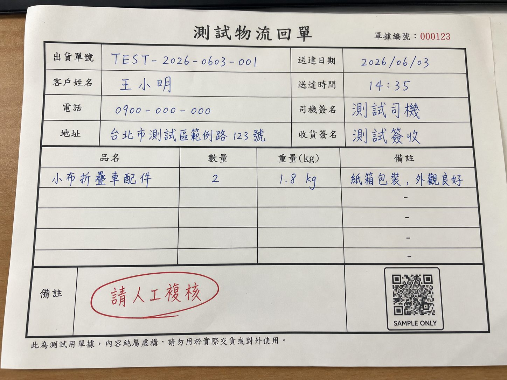
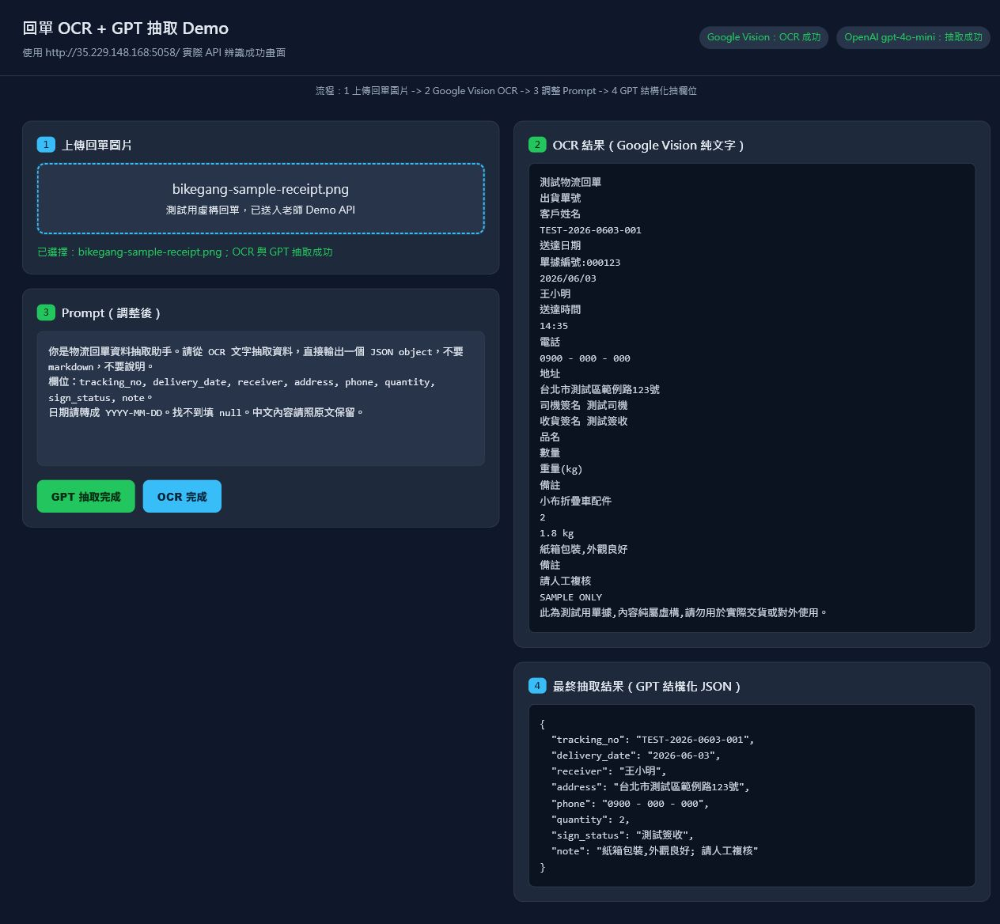

Document AI
回單 OCR
用老師 Demo 跑過一次「Google Vision OCR → GPT 結構化抽欄位」。重點不是辨識一張圖，而是把回單變成可檢查、可匯出、可追蹤的資料。
立即開啟限時 OCR 試跑
另開試跑頁；三張假單可選，每個瀏覽器只執行一次。
8抽取欄位
1人工複核點
JSON可直接進表格
低成本改 Prompt 不重跑 OCR
1 上傳回單、簽收單、維修交付單，先用匿名測試圖。
2 OCRGoogle Vision 只負責把圖片轉文字。
3 GPT依 Prompt 抽欄位，日期格式與缺漏值統一。
4 複核低信心或特殊備註交給人確認，再寫入表格。

假測試單：內容純屬虛構，可安心拿來做課堂 OCR 展示。
AI 抓出的欄位配對
出貨單號TEST-2026-0603-001
送達日期2026-06-03
收件人王小明
電話0900 - 000 - 000
地址台北市測試區範例路123號
簽收狀態測試簽收
備註紙箱包裝,外觀良好; 請人工複核
展示重點：人看到的是單據，系統要的是欄位。AI 的價值在於把兩者配對，並把需要人工複核的地方標出來。
抽取結果範例
{
"tracking_no": "TEST-2026-0603-001",
"delivery_date": "2026-06-03",
"receiver": "王小明",
"address": "台北市測試區範例路123號",
"phone": "0900 - 000 - 000",
"quantity": 2,
"sign_status": "測試簽收",
"note": "紙箱包裝,外觀良好; 請人工複核"
}
BIKEgang 可用情境
- 把出貨回單、簽收照片整理成 Google Sheet。
- 自動標記「地址不完整、簽名缺失、備註需複核」。
- 每天下午產出待追蹤清單，減少人工翻圖。
- 避免把真實客戶資料放進課堂展示，先用匿名樣本。
剛才 Demo 成功截圖

這張是剛才用老師 Demo API 跑出的成果畫面：OCR 文字在右上，GPT 結構化 JSON 在右下。
下一步資料準備
準備 5 到 10 張不同格式的測試回單：清楚、模糊、斜拍、有手寫備註、缺欄位各一張。每張人工先填一份正確答案，之後才能比較 AI 抓取品質。